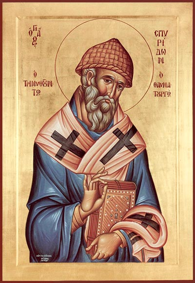

Препросла́вленный от Го́спода святи́телю и чудотво́рче Спиридо́не! Ны́не всечестну́ю па́мять твою́ пра́зднующе, я́ко мно́го могу́щему споспе́шествовати нам о просла́вльшем тя Христе́, уми́льно вопие́м ти: изба́ви нас от вся́ких бед и зол, да с благодаре́нием зове́м ти:
Ра́дуйся, Спиридо́не, преди́вный чудотво́рче.
От ю́ности украше́нный все́ми доброде́тельми, житие́м свои́м А́нгелом подража́вый, ты, святи́телю Спиридо́не, вои́стину показа́лся еси́ друг Христо́в; мы же, зря́ще тя, небе́снаго челове́ка и земна́го А́нгела, со благогове́нием уми́льно вопие́м ти:
Ра́дуйся, у́ме, созерца́яй та́йны Пресвяты́я Тро́ицы;
ра́дуйся, обогати́выйся Ду́ха пресве́тлым осия́нием.
Ра́дуйся, свети́льниче многосве́тлый;
ра́дуйся, ум твой безстра́стием просвети́вый.
Ра́дуйся, измла́да и́стинную простоту́ и безмо́лвие возлюби́вый;
ра́дуйся, украше́ние целому́дрия.
Ра́дуйся, любве́ неистощи́мая струя́;
ра́дуйся, я́ко страннолю́бию Авраа́ма подража́л еси́.
Ра́дуйся, я́ко всем любвеоби́льно вхо́ды до́ма своего́ отверза́л еси́;
ра́дуйся, ни́щих предста́телю.
Ра́дуйся, пред ни́мже благогове́ют лю́дие;
ра́дуйся, я́ко ты еси́ обита́лище Пресвята́го Ду́ха.
Ра́дуйся, Спиридо́не, преди́вный чудотво́рче.
Ви́дяще о́стров Кипр и вся христиа́нския страны́ нетле́нныя мо́щи твоя́, святи́телю, от ни́хже истека́ют оби́льная исцеле́ния, возра́довашася; и мы, почита́юще тя я́ко преоби́льнаго исто́чника благода́ти, низпо́сланнаго свы́ше нам, вопие́м к Верхо́вному Пода́телю Небе́сных и земны́х благ: Аллилу́иа.
Ра́зум Боже́ственный имы́й, а́ще сый па́стырь безслове́сных ове́ц, ты произволе́нием Пастыренача́льника Христа́ избра́н был еси́ в па́стыря ове́ц слове́сных. Ве́рнии же, разуме́вше тя до́браго па́стыря, неусы́пно о ста́де свое́м пеку́щагося, воспева́ху:
Ра́дуйся, архиере́е Бо́га Вы́шняго, в хирото́нии восприя́вый оби́льно Боже́ственную благода́ть;
ра́дуйся, свети́льниче многосве́тлый, горя́й и светя́й.
Ра́дуйся, ве́рный де́лателю в вертогра́де Христо́вом;
ра́дуйся, па́стырю, на па́жити ве́ры и благоче́стия па́ству свою́ воспита́вый.
Ра́дуйся, сия́ньми доброде́телей твои́х мир просвеща́вый;
ра́дуйся, Престо́лу Христо́ву Боже́ственную Же́ртву приноси́вый.
Ра́дуйся, иера́рше, разуме́нием Правосла́вия украше́нный;
ра́дуйся, апо́стольскаго уче́ния испо́лненный, ве́рных струя́ми спаси́тельнаго уче́ния напая́яй.
Ра́дуйся, я́ко и му́дрых озари́л еси́;
ра́дуйся, я́ко и про́стых сердца́ обнови́л еси́.
Ра́дуйся, сла́во правосла́вных и Це́ркве непоколеби́мое утвержде́ние;
ра́дуйся, украше́ние отце́в, сла́во и похвало́ иере́ев благогове́йных.
Ра́дуйся, Спиридо́не, преди́вный чудотво́рче.
Си́лою Вы́шняго, осени́вшею тя, святи́телю Спиридо́не, богому́др ты показа́лся еси́ и, сжа́вши дла́нию гли́ну, тро́ичность Лиц всем очеви́дно уясни́л еси́; те́мже лжему́дрии фило́софи, собра́вшиися на Собо́ре, ужасо́шася, ве́рнии же непостижи́маго просла́виша Бо́га, умудри́вшаго тя во спасе́ние, вопию́ще Ему́: Аллилу́иа.
Име́юще тя в помышле́ниих свои́х вси отцы́ Собо́ра про́ста, неиску́сна в кни́жнем уче́нии, моли́ша тя, о́тче Спиридо́не, не препира́тися словесы́ с вити́ею, мня́щимся му́дру бы́ти. Ты же, святи́телю, ре́вностию по Бо́зе распаля́емый, ве́руя, я́ко про́поведь Христо́ва не в препре́тельных му́дрости челове́ческия словесе́х, но в явле́нии ду́ха и си́лы, прему́дре того́ обличи́в, вразуми́л и на путь и́стинный наста́вил еси́. Вси, ви́девше чу́до сие́, взыва́ху:
Ра́дуйся, све́те правосла́вныя му́дрости;
ра́дуйся, я́ко глаго́лемых бы́ти му́дрых совопро́сников посрами́л еси́.
Ра́дуйся, исто́чниче, благода́тию оби́льный;
ра́дуйся, непоколеби́мый сто́лпе, тве́рдо содержа́щий су́щих в ве́ре.
Ра́дуйся, омрача́яй всепа́губную е́ресь;
ра́дуйся, чрез него́же попра́но бысть безу́мие.
Ра́дуйся, я́ко персть земна́я пропове́да твои́ма рука́ми Святу́ю Тро́ицу;
ра́дуйся, я́ко из гли́ны изве́л еси́ огнь и во́ду во утвержде́ние догма́та Святы́я Тро́ицы.
Ра́дуйся, я́ко просвети́л еси́ лю́ди сла́вити Сло́во, вои́стину Единосу́щное Пребезнача́льному Отцу́;
ра́дуйся, я́ко зми́еву главу́ па́губныя а́риевы е́реси порази́л еси́.
Ра́дуйся, я́ко тобо́ю поже́рта бысть зло́ба;
ра́дуйся, неве́рнаго мудреца́ совопро́сника к и́стинней ве́ре обрати́вый.
Ра́дуйся, Спиридо́не, преди́вный чудотво́рче.
Жизнь проводя́ в убо́жестве и нищете́, ни́щим и бе́дным был еси́ пита́тель и помо́щник и, любве́ ра́ди к ни́щим, зми́я в зла́то преложи́л еси́ и дал еси́ о́ное тре́бующему твоея́ по́мощи. Дивя́щеся о чудеси́ сем, благода́рственно вопие́м к Бо́гу: Аллилу́иа.
Слы́шано бысть всем и всю́ду, я́ко святи́тель Спиридо́н вои́стину есть жили́ще Святы́я Тро́ицы: всели́ся бо в нем Бог Оте́ц, Бог Сло́во и Бог Дух Святы́й. Сего́ ра́ди ты словесы́ и дея́ньми пропове́дал еси́ всем христиа́ном воплоще́ннаго и́стиннаго Бо́га, вопию́щим:
Ра́дуйся, слове́с Бо́жиих таи́нниче;
ра́дуйся, домострои́тельство Бо́жие о спасе́нии ми́ра уясни́вый.
Ра́дуйся, я́ко научи́л еси́ не испы́товати е́же есть превы́ше ра́зума и му́дрости челове́ческия;
ра́дуйся, непостижи́мую де́йствующую в тебе́ си́лу Бо́жию яви́вый.
Ра́дуйся, я́ко уста́ми твои́ми провеща́ Сам Бог;
ра́дуйся, я́ко вси послу́шаху тебе́ в сла́дость.
Ра́дуйся, мглу идолослуже́ния разгна́вый;
ра́дуйся, я́ко мно́гих к и́стинней ве́ре приве́л еси́.
Ра́дуйся, я́ко главы́ неви́димых зми́ев порази́л еси́;
ра́дуйся, я́ко тобо́ю прославля́ется ве́ра христиа́нская.
Ра́дуйся, я́ко све́тло озаря́еши всех ублажа́ющих тя;
ра́дуйся, побо́рниче христиа́нския ве́ры и Правосла́вия.
Ра́дуйся, Спиридо́не, преди́вный чудотво́рче.
Боже́ственнаго Ду́ха преиспо́лнен был еси́, святи́телю Спиридо́не, ра́ди доброде́тельнаго жития́ твоего́; зане́ кро́ток, ми́лостив, чист се́рдцем, терпели́в, непамятозло́бив, страннолю́бец был еси́: сего́ ра́ди Творе́ц и в чудесе́х пресла́вна показа́ тя. Мы же, прославля́я Бо́га, просла́вльшаго тя, вопие́м Ему́: Аллилу́иа.
Равноа́нгельна Спиридо́на зрим, вели́каго чудотво́рца. Не́когда страна́ от бездо́ждия и за́сухи вельми́ пострада́: бысть глад и я́зва, и мно́гое мно́жество люде́й умро́ша, моли́твами же святи́теля сни́де с небесе́ на зе́млю дождь; лю́дие же, изба́вльшеся от бе́дствия, благода́рственно взыва́ху:
Ра́дуйся, вели́кому проро́ку Илии́ уподо́бивыйся;
ра́дуйся, я́ко дождь, отъе́млющий глад и неду́ги, благовре́менне низве́л еси́.
Ра́дуйся, па́ки моли́твами свои́ми не́бо заключи́вый;
ра́дуйся, я́ко немилосе́рдаго купца́ лише́нием име́ния наказа́л еси́.
Ра́дуйся, я́ко тре́бующим пи́щу оби́льно дарова́л еси́;
ра́дуйся, я́ко любоблагоутро́бие Бо́га к лю́дем подвиза́еши.
Ра́дуйся, взе́мляй не́мощи немощны́х;
ра́дуйся, богоблагода́тный челове́ком помо́щниче.
Ра́дуйся, боля́щим здра́вие подава́яй;
ра́дуйся, его́же трепе́щут де́мони.
Ра́дуйся, безчи́сленных чуде́с исто́чниче.
Ра́дуйся, Спиридо́не, преди́вный чудотво́рче.
Заве́са ветхозаве́тной ски́нии закрыва́ше во Свята́я Святы́х ковче́г, ма́нну и скрижа́ли. И храм твой, святи́телю Спиридо́не, име́ет ра́ку твою́, я́ко ковче́г, святы́я мо́щи твоя́, я́ко ма́нну, се́рдце твое́, я́ко скрижа́ли Боже́ственныя благода́ти, на ни́хже зрим начерта́нную песнь: Аллилу́иа.
Наро́д Ки́пра не́когда за умноже́ние беззако́ний наказа́ Госпо́дь безпло́дием земли́, егда́ же прии́де к свято́му Спиридо́ну зна́емый земледе́лец, прося́ по́мощи, даде́ ему́ святы́й зла́то; мину́вшу же бе́дствию, земледе́лец о́ный возврати́ па́ки зла́то. И — о чудесе́! — зла́то змий бысть. Прославля́юще Бо́га, ди́внаго во святы́х Свои́х, вопие́м:
Ра́дуйся, я́ко Моисе́ю, чуде́сно преложи́вшему жезл в зми́я, подража́л еси́;
ра́дуйся, человеколюби́вый па́стырю, избавля́яй от бед слове́сныя о́вцы ста́да своего́.
Ра́дуйся, оби́льно всех все́ми бла́гами обогаща́яй;
ра́дуйся, я́ко Илия́, бе́дных пита́вый.
Ра́дуйся, немилосе́рдых к милосе́рдию обраща́яй;
ра́дуйся, достоподража́емый приме́р любве́ для челове́ков, в ми́ре живу́щих.
Ра́дуйся, ве́рных и неве́рных в беда́х утеше́ние;
ра́дуйся, дре́во сенноли́ственное, град и страну́ осеня́ющее.
Ра́дуйся, сла́во и похвало́ керки́рян;
ра́дуйся, над вла́гою и су́шею, зно́ем и хла́дом благода́тию Бо́жиею влады́чествуяй.
Ра́дуйся, уста́вы земли́ моли́твою пременя́яй;
ра́дуйся, бу́дущая, я́ко настоя́щая, прови́девый.
Ра́дуйся, Спиридо́не, преди́вный чудотво́рче.
Хода́тай пред Го́сподем за всех яви́лся еси́, святи́телю Спиридо́не: сего́ ра́ди и мы прибега́ем под кров твой, и́щуще спасе́ния, вси бо помо́щника тебе́ и́мамы во всех ну́ждах, во вре́мя гла́да, смертоно́сныя я́звы и во вся годи́ны бед и искуше́ний. Сего́ ра́ди благода́рственно вопие́м Бо́гу: Аллилу́иа.
Но́вое чу́до ви́дим и боголе́пное: егда́ ты, о́тче, ше́ствовал изба́вити непови́нно осужде́ннаго на смерть, бу́рный пото́к прегради́ путь тебе́; ты же и́менем Всемогу́щаго Бо́га повеле́л ему́ ста́ти и преше́л еси́ со спу́тники чрез ре́ку, я́ко по су́ху. Сла́ва о сем чудеси́ распространи́ся всю́ду, и вси просла́виша Бо́га, вопию́ще к тебе́:
Ра́дуйся, я́ко иногда́ Иису́с Нави́н чрез Иорда́н ре́ку по су́ху преше́дый;
ра́дуйся, ре́чная устремле́ния гла́сом свои́м укроти́вый.
Ра́дуйся, я́ко тру́дный путь предприя́л еси́, дви́жимый милосе́рдием;
ра́дуйся, я́ко клевету́ разруши́л еси́ и непови́ннаго от уз темни́цы и напра́сныя сме́рти изба́вил еси́.
Ра́дуйся, жи́зни по Бо́зе благи́й поспе́шниче;
ра́дуйся, непови́нно угнете́нных защи́тителю.
Ра́дуйся, уста́вов естества́ во́днаго премени́телю;
ра́дуйся, я́ко судию́ вразуми́л еси́ и от уби́йства спасл еси́.
Ра́дуйся, и́стинное исправле́ние душ;
ра́дуйся, ди́вная си́ло, пото́ки удержава́ющая.
Ра́дуйся, услажда́ющий сердца́ челове́ков, к тебе́ притека́ющих;
ра́дуйся, человеколю́бию Авраа́ма подража́телю.
Ра́дуйся, Спиридо́не, преди́вный чудотво́рче.
Стра́нник и пришле́ц был еси́ на земли́, я́коже и про́чии челове́цы. Оба́че из чре́ва ма́тере Всеве́дущий вели́каго уго́дника и чудотво́рца показа́ тя, святи́телю Спиридо́не: бе́сы бо изгоня́еши, вся́кую боле́знь и я́зву исцеля́еши, помышле́ния люде́й зри́ши, те́мже и ди́вен во святы́х показа́лся еси́. Мы же, возсыла́юще моли́тву ко Благода́телю всех Бо́гу, вопие́м Ему́: Аллилу́иа.
Весь мир у́жасом мно́гим содрогну́ся, егда́ услы́ша, я́ко смерть, по гла́су твоему́, возвраща́ет из гробо́в мертвецы́ своя́, и возопи́:
Ра́дуйся, уме́ршую дщерь свою́, да яви́т вруче́нное ей сокро́вище, к жи́зни воззва́вый;
ра́дуйся, ско́рбную вдови́цу, на сохране́ние зла́то вда́вшую, уте́шивый.
Ра́дуйся, уме́ршее отроча́ из ме́ртвых воскреси́вый;
ра́дуйся, я́ко ма́терь его́, внеза́пно от ра́дости уме́ршую, оживи́вый.
Ра́дуйся, я́ко уподо́бился еси́ Илии́, моли́твами сы́ну саре́птския жены́ жизнь возврати́вшему;
ра́дуйся, я́ко и Елисе́ю, возбуди́вшему от сме́рти отроча́, подража́л еси́.
Ра́дуйся, па́стырю, преи́скренне лю́бящий челове́ки;
ра́дуйся, жене́ блудни́це, слеза́ми но́зе твои́ омы́вшей, грехи́ и́менем Бо́га отпусти́вый.
Ра́дуйся, святу́ю ре́вность верхо́внаго апо́стола стяжа́вый;
ра́дуйся, я́ко нераска́янная гре́шница, по глаго́лу твоему́, в тя́жких боле́знех у́мре.
Ра́дуйся, земли́ плодоно́сие моли́твами твои́ми испроси́вый;
ра́дуйся, непрело́жное воскресе́ния челове́ков увере́ние.
Ра́дуйся, Спиридо́не, преди́вный чудотво́рче.
Ду́ха Боже́ственнаго осия́ньми озаре́н был еси́, святи́телю Спиридо́не, име́л бо еси́ ду́ха прему́дрости, я́ко му́дрыми словесы́ безу́мных обуи́л еси́ и посреде́ отце́в ве́ру утверди́л еси́; ду́ха ра́зума, я́ко умы́ омраче́нныя озари́л еси́; ду́ха стра́ха Бо́жия, я́ко вы́ну де́лании богоуго́дными ду́шу очи́стил еси́. Те́мже, предста́в Престо́лу Вы́шняго, с со́нмом А́нгелов воспева́еши Ему́: Аллилу́иа.
Жезл па́стыря слове́сных ове́ц от Пастыренача́льника Го́спода Иису́са прие́мый, святы́й Спиридо́н не премени́ жития́ своего́: нестяжа́телен, кро́ток, любве́ ра́ди вся терпя́й, не постыде́ся пещи́ся и о ста́де безслове́сных ове́ц. Вся сия́ возбужда́ют нас сла́вити Бо́га и взыва́ти тебе́:
Ра́дуйся, сла́ву ми́ра сего́ я́ко су́етную презре́вый;
ра́дуйся, мзду мно́гу на Небесе́х стяжа́вый.
Ра́дуйся, кра́сная ми́ра сего́ в уме́ты вмени́вый;
ра́дуйся, сосу́де Небе́сных благ.
Ра́дуйся, святе́йшая па́жите киприо́тов;
ра́дуйся, я́ко тебе́ ра́ди Бог хи́щников ове́ц твои́х неви́димыми у́зами связа́.
Ра́дуйся, та́тем оте́ческое вразумле́ние препода́вый;
ра́дуйся, по милосе́рдию твоему́ за проведе́нную без сна нощь овна́ им дарова́вый.
Ра́дуйся, непослуша́нием ко́злища, я́ко бы ра́зум иму́щаго, купца́, утаи́вшаго це́ну его́, обличи́вый;
ра́дуйся, утаи́вшаго сре́бренники твоя́ к покаянию приведы́й.
Ра́дуйся, я́ко от стра́сти корыстолю́бия увеща́нием свои́м исцели́л еси́ его́.
Ра́дуйся, Спиридо́не, преди́вный чудотво́рче.
Спаса́яй ду́ши па́ствы, Бо́гом тебе́ вве́ренныя, ты, святи́телю Спиридо́не, произволе́нием Бо́жиим, зван был еси́ яви́ти сла́ву твою́, па́че же сла́ву И́стиннаго Бо́га, и в ины́я страны́, да всю́ду сла́вят И́мя Бо́жие, вопию́ще: Аллилу́иа.
Ско́рый помо́щник и засту́пник во вся́ких ну́ждах и ско́рбех, святы́й Спиридо́н, по повеле́нию царе́ву, я́коже и про́чии па́стыри, прии́де во град Антиохи́ю, иде́же бе одержи́мый боле́знию царь Конста́нтий; святи́тель главы́ его́ косну́ся и сотвори́ здра́ва. Сему́ чудеси́ дивя́щеся, вопие́м ти:
Ра́дуйся, его́же в со́нном виде́нии А́нгел, я́ко цели́теля, яви́ царю́;
ра́дуйся, Боже́ственныя ра́ди любве́ тру́дный путь в ста́рости восприя́вый.
Ра́дуйся, царе́ву рабу́, уда́рившему тя в лани́ту, по за́поведи Спаси́теля, другу́ю подста́вивый;
ра́дуйся, сто́лпе смире́ния.
Ра́дуйся, моли́твами свои́ми сле́зно прося́щему царю́ здра́вие дарова́вый;
ра́дуйся, я́ко уничиже́нием свои́м раба́ вразуми́л еси́ и неми́лостивый нрав его́ премени́л еси́.
Ра́дуйся, я́ко благоче́стию и милосе́рдию царя́ научи́л еси́;
ра́дуйся, я́ко, ненави́дяй земна́я сокро́вища, зла́то царя́ отве́ргл еси́.
Ра́дуйся, я́ко ученика́ своего́ Трифи́ллиа от пристра́стия к земны́м бла́гам отврати́л еси́ и сосу́дом благода́ти Бо́жия соде́лал еси́;
ра́дуйся, я́ко прише́дшу тебе́ в Александри́ю, и́доли падо́ша.
Ра́дуйся, ему́же и бе́си повину́ются;
ра́дуйся, я́ко от идолослуже́ния мно́гих отврати́л еси́.
Ра́дуйся, Спиридо́не, преди́вный чудотво́рче.
Пе́ние а́нгельское бысть, егда́ во хра́ме приноси́л еси́, святи́телю Спиридо́не, вече́рния моли́твы твоя́, и не бе́ша сослужа́щии тебе́. Жи́телие же гра́да, ди́вное пе́ние слы́шавше, внидо́ша в храм и, никого́ же ви́девше, с Го́рними си́лами воспева́ху: Аллилу́иа.
Светоза́рное со́лнце ми́рови, собесе́дник А́нгелов был еси́ на земли́, святи́телю Спиридо́не; преда́в же дух твой в ру́це Бо́жии, пресели́лся еси́ в Го́рняя селе́ния, моля́ся за мир пред Престо́лом Влады́ки. Мы же, живу́щии на земли́, вопие́м ти:
Ра́дуйся, я́ко тебе́, еще́ жи́ву су́щу, сослужа́ху А́нгели;
ра́дуйся, псалмопе́ние Арха́нгелов слы́шавый.
Ра́дуйся, ви́димый о́бразе на́шего преображе́ния;
ра́дуйся; я́ко недоста́вшу еле́ю в хра́ме Бог тебе́ ра́ди с избы́тком лампа́ды напо́лни тем.
Ра́дуйся, лампа́до Боже́ственнаго сия́ния;
ра́дуйся, сосу́де благода́ти Божией, оби́льно, подо́бне еле́ю, наполня́ющей ду́шу твою́.
Ра́дуйся, неизсяка́емый исто́чниче, при́сно источа́ющий всем то́ки благода́ти;
ра́дуйся, о не́мже изумля́ются А́нгели.
Ра́дуйся, преслуша́ние диа́кона в хра́ме наказа́вый;
ра́дуйся, тщесла́вившагося свои́м гла́сом, и гла́са и язы́ка лиши́вый.
Ра́дуйся, я́ко, во вре́мя зно́я, внеза́пу роса́, снизше́дшая Свы́ше, свяще́нную твою́ главу́ прохлади́;
ра́дуйся, в зна́мении сем бли́зость преставле́ния своего́ прови́девый.
Ра́дуйся, Спиридо́не, преди́вный чудотво́рче.
Покро́в и прибе́жище бы́вый всем к тебе́ притека́ющим ве́рным еще́ в житии́ твое́м, ты, святи́телю, не оста́вил еси́ нас си́рых и по твое́м успе́нии; Бог, побежда́ющий естества́ чин, сохрани́ святы́е мо́щи твоя́ нетле́нными во укрепле́ние правосла́вныя ве́ры и благоче́стия, в зна́мение безсме́ртия, Его́же прославля́юще, вопие́м: Аллилу́иа.
Воспева́ем тя, святи́телю Бо́жий, я́ко удиви́л еси́ мир чудесы́, истека́ющими от святы́х моще́й твои́х. Вси бо с ве́рою приходя́щии и лобыза́ющии их получа́ют вся благопотребная проси́мая. И мы, да́вшаго тебе́ кре́пость, венча́вшаго тя венце́м нетле́ния и де́йствующаго тобо́ю Бо́га прославля́юще, вопие́м ти:
Ра́дуйся, во вре́мя гла́да корабе́льником яви́выйся и пи́щу доста́вити повеле́вый;
ра́дуйся, слепы́м, с ве́рою прите́кшим к святы́м моще́м твои́м, зре́ние дарова́вый.
Ра́дуйся, возбра́нный воево́до Керки́ры;
ра́дуйся, я́ко по́лчища злочести́вых ага́рян изгна́л еси́ и корабли́ их в пучи́не потопи́л еси́.
Ра́дуйся, его́же ви́деша окруже́ннаго со́нмом А́нгелов, в десни́це меч держа́вша и в тре́пет враго́в приве́дша;
ра́дуйся, созда́ти себе́ храм, во е́же соверша́ти в нем литурги́ю на пре́сном хле́бе, воево́де возбрани́вый.
Ра́дуйся, воево́ду лати́нскаго лю́тою сме́ртию порази́вый;
ра́дуйся, мо́лниею изображе́ние его́ в до́ме в Вене́ции соже́гший.
Ра́дуйся, отсту́пльства и лжемудрова́ния За́пада посрами́вый;
ра́дуйся, еди́ную правосла́вную ве́ру бы́ти и́стинную и спаси́тельную для челове́ков утверди́вый.
Ра́дуйся, Спиридо́не, преди́вный чудотво́рче.
О пречу́дный святи́телю Христо́в, о́тче Спиридо́не! Ны́нешнее на́ше моле́ние прие́м, изба́ви нас от всех бед и напа́стей, укрепи́ на враги́ страну́ на́шу, да́руй нам оставле́ние прегреше́ний и изми́ от ве́чныя сме́рти всех вопию́щих о тебе́ к Бо́гу: Аллилу́иа.
Этот кондак читается трижды!
От ю́ности украше́нный все́ми доброде́тельми, житие́м свои́м А́нгелом подража́вый, ты, святи́телю Спиридо́не, вои́стину показа́лся еси́ друг Христо́в; мы же, зря́ще тя, небе́снаго челове́ка и земна́го А́нгела, со благогове́нием уми́льно вопие́м ти:
Ра́дуйся, у́ме, созерца́яй та́йны Пресвяты́я Тро́ицы;
ра́дуйся, обогати́выйся Ду́ха пресве́тлым осия́нием.
Ра́дуйся, свети́льниче многосве́тлый;
ра́дуйся, ум твой безстра́стием просвети́вый.
Ра́дуйся, измла́да и́стинную простоту́ и безмо́лвие возлюби́вый;
ра́дуйся, украше́ние целому́дрия.
Ра́дуйся, любве́ неистощи́мая струя́;
ра́дуйся, я́ко страннолю́бию Авраа́ма подража́л еси́.
Ра́дуйся, я́ко всем любвеоби́льно вхо́ды до́ма своего́ отверза́л еси́;
ра́дуйся, ни́щих предста́телю.
Ра́дуйся, пред ни́мже благогове́ют лю́дие;
ра́дуйся, я́ко ты еси́ обита́лище Пресвята́го Ду́ха.
Ра́дуйся, Спиридо́не, преди́вный чудотво́рче.
Препросла́вленный от Го́спода святи́телю и чудотво́рче Спиридо́не! Ны́не всечестну́ю па́мять твою́ пра́зднующе, я́ко мно́го могу́щему споспе́шествовати нам о просла́вльшем тя Христе́, уми́льно вопие́м ти: изба́ви нас от вся́ких бед и зол, да с благодаре́нием зове́м ти:
Ра́дуйся, Спиридо́не, преди́вный чудотво́рче.
О вели́кий и пречу́дный святи́телю Христо́в и чудотво́рче Спиридо́не, Керки́рская похвало́, всея́ вселе́нныя свети́льниче пресве́тлый, те́плый к Бо́гу моли́твенниче и всем к тебе́ прибега́ющим и с ве́рою моля́щимся скоропредста́тельный засту́пниче! Ты ве́ру правосла́вную на Нике́йстем Собо́ре посреде́ отце́в пресла́вно изъясни́л еси́, триеди́нство Святы́я Тро́ицы чуде́сною си́лою показа́л еси́ и еретико́в до конца́ посрами́л еси́. Услы́ши нас, гре́шных, святи́телю Христо́в, моля́щихся тебе́, и си́льным твои́м предста́тельством у Го́спода изба́ви нас от вся́каго зла́го обстоя́ния: от гла́да, пото́па, огня́ и смертоно́сныя я́звы. Ты бо во вре́менней жи́зни свое́й от всех сих бе́дствий избавля́л еси́ люде́й твои́х: от наше́ствия ага́рян и от гла́да страну́ твою́ сохрани́л еси́, царя́ от неисце́льнаго неду́га изба́вил и мно́гия гре́шники к покаянию приве́л еси́, ме́ртвых пресла́вно воскреша́л еси́, за свя́тость же жития́ твоего́ А́нгелы, неви́димо в це́ркви пою́щия и сослужа́щия тебе́, име́л еси́. Си́це у́бо просла́ви тебе́, ве́рнаго Своего́ раба́, Влады́ка Христо́с, я́ко вся та́йная челове́ческая дея́ния дарова́ тебе́ разуме́ти и облича́ти непра́ведно живу́щия. Мно́гим, в ску́дости и недоста́точестве живу́щим, ты усе́рдно помога́л еси́, лю́ди убо́гия изоби́льно во вре́мя гла́да напита́л еси́ и и́на мно́га зна́мения си́лою в тебе́ живу́щаго Ду́ха Бо́жия сотвори́л еси́. Си́це и нас не оста́ви, святи́телю Христо́в, помина́й нас, чад свои́х, у Престо́ла Вседержи́теля и умоли́ Го́спода, да пода́ст мно́гих на́ших грехо́в проще́ние, безбе́дное и ми́рное житие́ да да́рует нам, кончи́ны же живота́ непосты́дныя и ми́рныя, и блаже́нства ве́чнаго в бу́дущем веце сподо́бит нас, да вы́ну возсыла́ем сла́ву и благодаре́ние Отцу́ и Сы́ну и Ду́ху Свято́му, ны́не и при́сно и во ве́ки веко́в. Ами́нь.
О всеблаже́нный святи́телю Спиридо́не, вели́кий уго́дниче Христо́в и пресла́вный чудотво́рче! Предстоя́й на Небеси́ Престо́лу Бо́жию с ли́ки А́нгел, при́зри ми́лостивым о́ком на предстоя́щия зде лю́ди и прося́щия си́льныя твоея́ по́мощи. Умоли́ благоутро́бие Человеколю́бца Бо́га, да не осу́дит нас по беззако́ниим на́шим, но да сотвори́т с на́ми по ми́лости Свое́й. Испроси́ нам у Христа́ и Бо́га на́шего ми́рное и безмяте́жное житие́, здра́вие душе́вное и теле́сное, земли́ благопло́дие и во всем вся́кое изоби́лие и благоде́нствие, и да не во зло обрати́м блага́я, да́руемая нам от ще́драго Бо́га, но во сла́ву Его́ и в прославле́ние твоего́ заступле́ния! Изба́ви всех ве́рою несумне́нною к Бо́гу приходя́щих от вся́ких бед душе́вных и теле́сных, от всех томле́ний и диа́вольских наве́тов. Бу́ди печа́льным уте́шитель, неду́гующим врач, в напа́стех помо́щник, наги́м покрови́тель, вдови́цам засту́пник, си́рым защи́тник, младе́нцем пита́тель, ста́рым укрепи́тель, стра́нствующим путево́ждь, пла́вающим ко́рмчий и исхода́тайствуй всем, кре́пкия по́мощи твоея́ тре́бующим вся, я́же ко спасе́нию, поле́зная. Я́ко да твои́ми моли́твами наставляеми и соблюда́еми, дости́гнем в ве́чный поко́й и ку́пно с тобо́ю просла́вим Бо́га, в Тро́ице Святе́й сла́вимаго, Отца́ и Сы́на и Свята́го Ду́ха, ны́не и при́сно и во ве́ки веко́в. Ами́нь.
О, преблаже́нне святи́телю Спиридо́не! Умоли́ благосе́рдие Человеколю́бца Бо́га, да не осу́дит на́с по беззако́нием на́шим, но да сотвори́т с на́ми по ми́лости Свое́й. Испроси́ на́м, рабо́м Бо́жиим (имена́), у Христа́ и Бо́га на́шего ми́рное и безмяте́жное житие́, здра́вие душе́вное и теле́сное. Изба́ви на́с от вся́ких бе́д душе́вных и теле́сных, от все́х томле́ний и диа́вольских наве́тов. Помина́й на́с у Престо́ла Вседержи́теля и умоли́ Го́спода, да пода́ст мно́гих на́ших грехо́в проще́ние, безбе́дное и ми́рное житие́ да да́рует на́м, кончи́ны же живота́ непосты́дныя и ми́рныя и блаже́нства ве́чнаго в бу́дущем ве́це сподо́бит на́с, да непреста́нно возсыла́ем сла́ву и благодаре́ние Отцу́ и Сы́ну и Ду́ху Свято́му, ны́не и при́сно и во ве́ки веко́в. Ами́нь.